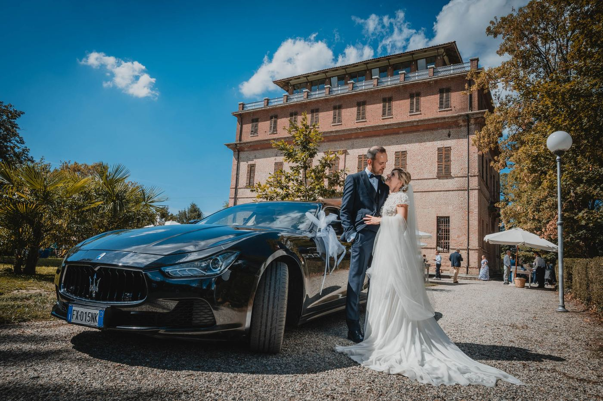
01Reportage di matrimonio
Una documentazione attenta e precisa, in cui l'abilita tecnica si esprime nel cogliere scatti spontanei, senza escludere gli aspetti piu tradizionali.
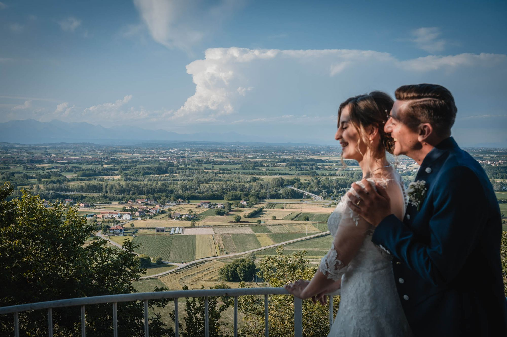
Agenzia di fotogiornalismo per il matrimonio. Un'interpretazione autoriale dell'evento, con un team di fotografi e videomaker professionisti, in tutta Italia.
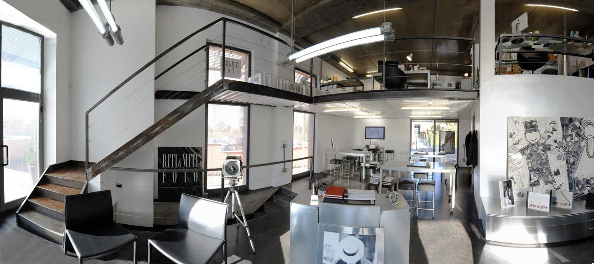
Riti & Miti e stato fondato nel 1997 da Robertino Mariotti che, dopo diverse esperienze nella fotografia professionale, ha cercato nuove collaborazioni con altri fotografi in modo da offrire un servizio ampio e diversificato.
Quella piccola attivita e diventata con il tempo una realta forte e consolidata in Piemonte e poi in tutta Italia, in particolare nel wedding e nel destination wedding, ed e organizzata per operare su tutto il territorio nazionale.
Robertino Mariotti opera nel settore da oltre vent'anni e si e affermato per un approccio raffinato ed elegante. Oltre al wedding e specializzato in ritratti e reportage, dove i suoi scatti sono riconoscibili per la semplicita formale e per l'attenzione maniacale ai particolari e alla luce.
Robertino Mariotti e i suoi collaboratori fanno parte di ANFM, l'Associazione Nazionale Fotografi Matrimonialisti. Ed e testimonial di Album Epoca, il progetto che permette agli sposi di scegliere ogni dettaglio del proprio album.
Robertino Mariotti, fondatore
Un servizio completo e personalizzato, dalla conoscenza della coppia alla consegna dell'album.

01Una documentazione attenta e precisa, in cui l'abilita tecnica si esprime nel cogliere scatti spontanei, senza escludere gli aspetti piu tradizionali.
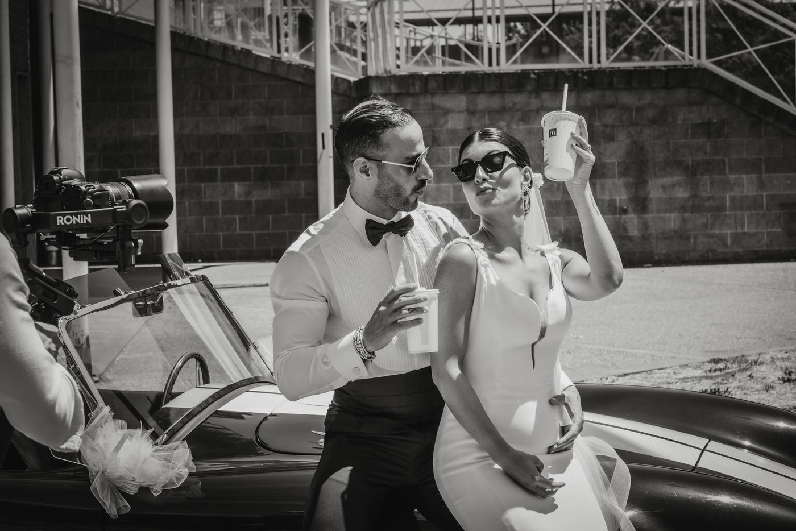
02Il video del matrimonio realizzato dai videomaker del team, che lavorano fianco a fianco con i fotografi sulla stessa lettura della giornata.
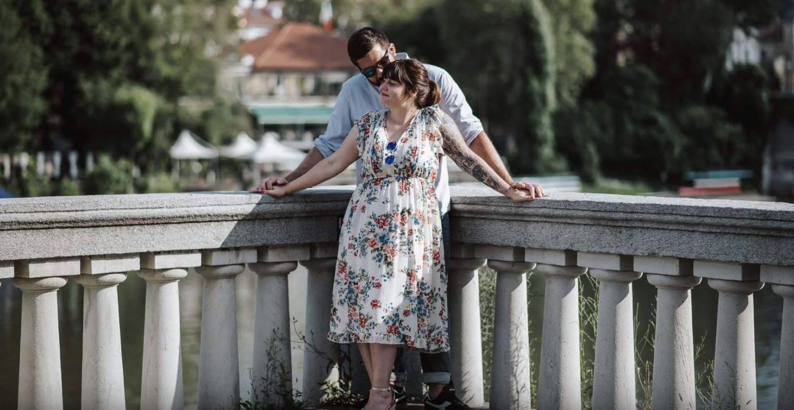
03Lo shooting delle fasi prematrimoniali crea il feeling con gli sposi: serve a cogliere in maniera spontanea tutto quello che caratterizzera il giorno delle nozze.
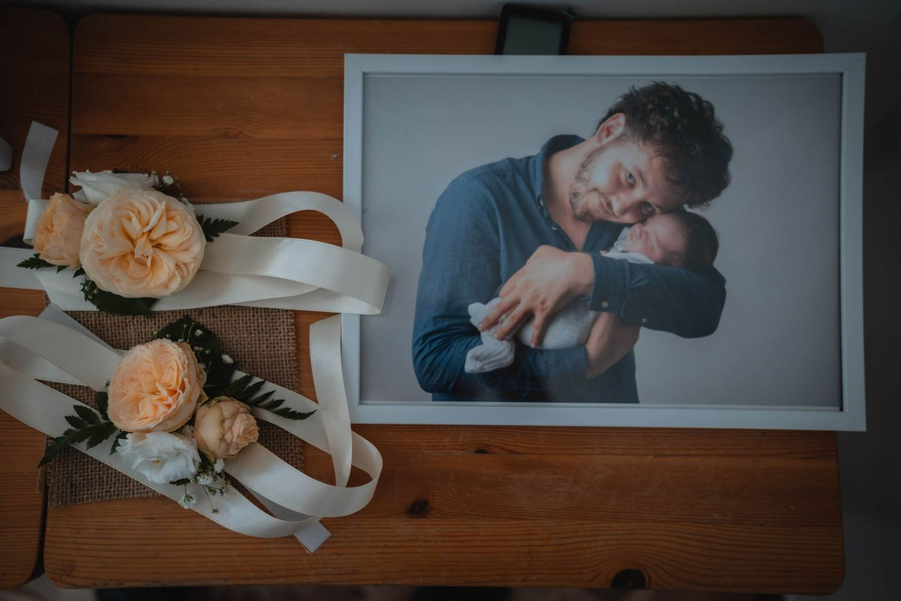
04Robertino Mariotti e testimonial di Album Epoca: album di matrimonio di qualita, dove gli sposi scelgono ogni piu piccolo dettaglio.
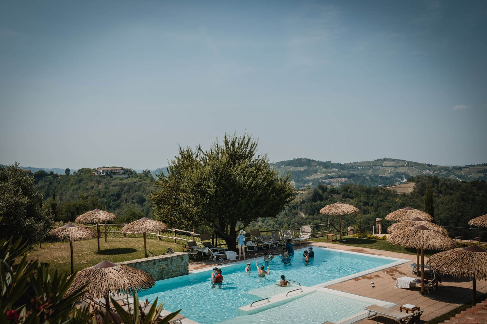
05Lavoriamo con wedding planner stranieri che scelgono una location in Italia. Operiamo su tutto il territorio nazionale.
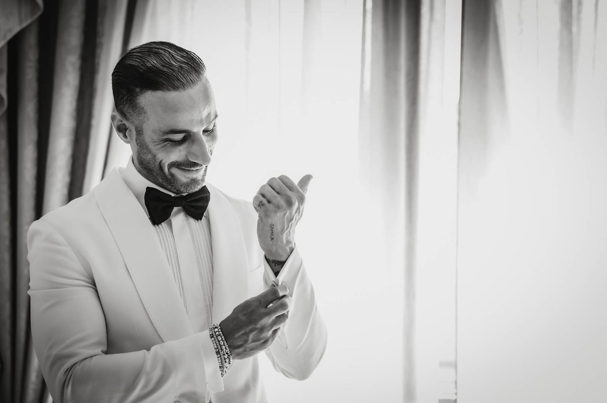
06Fuori dal wedding, il lavoro di ricerca sull'immagine continua: ritratti e reportage con la stessa attenzione alla luce e al dettaglio.
Per realizzare reportage plasmati sulla coppia, approfondiamo la conoscenza con i futuri sposi e definiamo tutti i particolari, per cogliere ogni minima sfumatura.
L'evento non viene solo registrato: viene letto. E la ragione per cui lo studio nasce come agenzia di fotogiornalismo.
Scatti spontanei colti con abilita tecnica, senza rinunciare agli aspetti piu tradizionali che una famiglia si aspetta.
Ogni servizio e in linea con il vostro stile e i vostri gusti. Nessun pacchetto uguale al precedente.
Uno studio fisico a Torino, in via Pietro Cossa, dove incontrarci. E un team di fotografi e videomaker professionisti.
Ogni matrimonio ha la sua galleria. In una versione pubblicata ognuna apre sulla propria pagina.
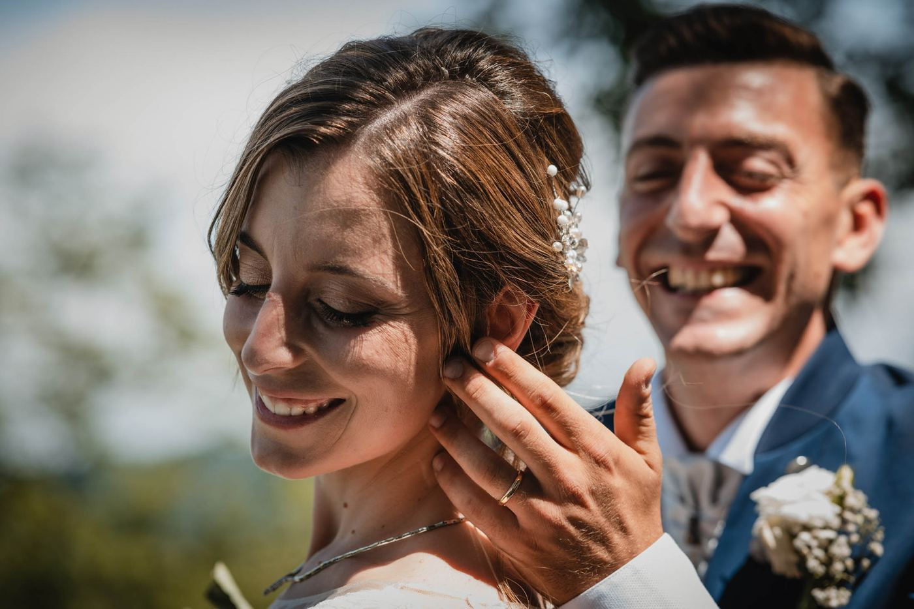
Silvia & SalvatoreMatrimoni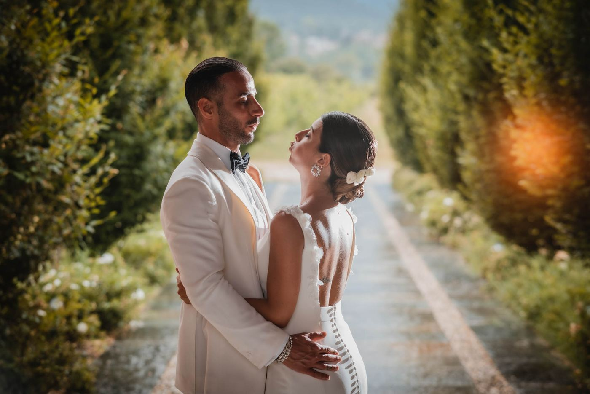
Sara & FrancescoMatrimoni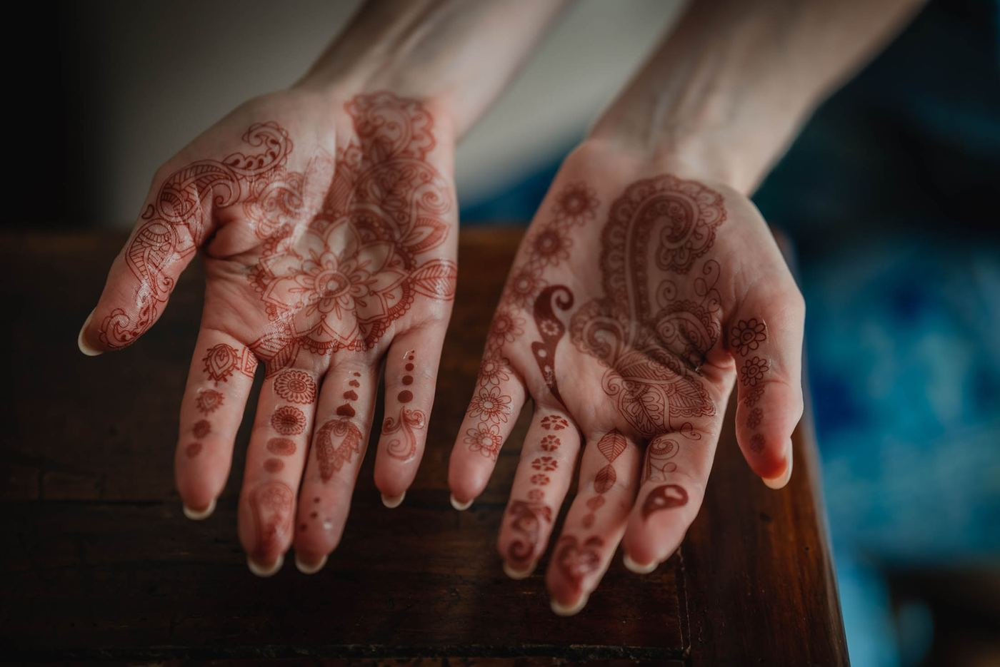
Corinne & AshisDestination wedding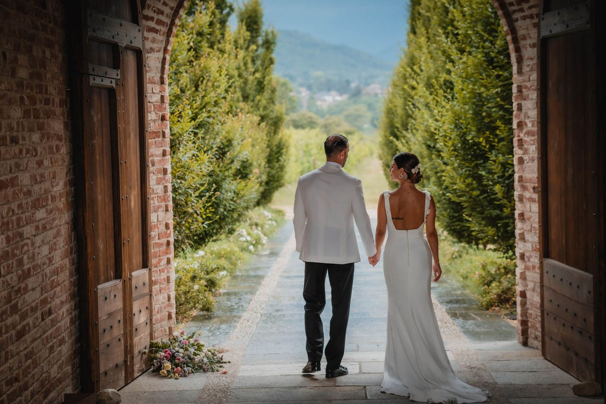
Giulia & RiccardoMatrimoni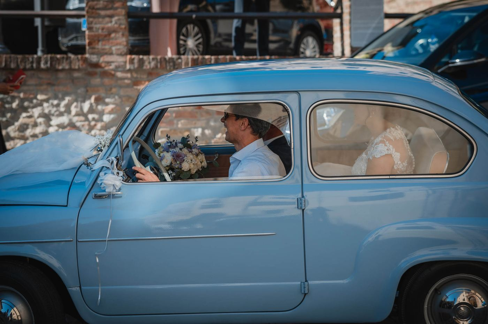
Jacqueline & AlexandroMatrimoni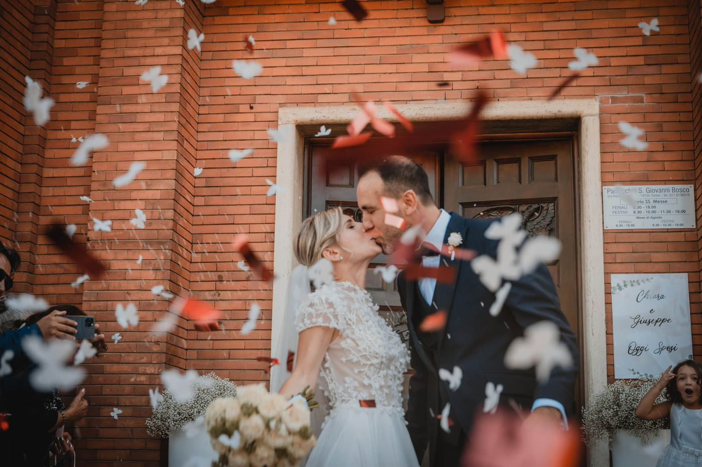
Florencia & AndreaMatrimoni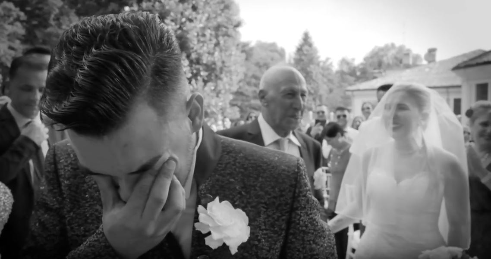
Danilo & LidiaVilla Sassi, 2019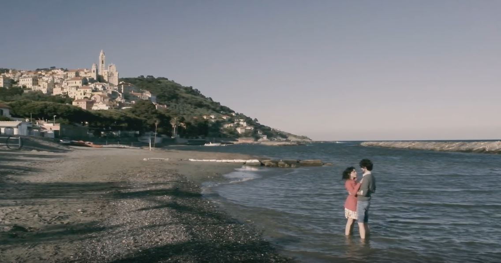
Loredana & SimoneEngagementCredo nelle immagini, quelle semplici, pulite
La fotografia e come il sogno: ci trasporta in luoghi lontani, ha la capacita in qualche modo di fermare il tempo, di espanderlo, di renderlo elastico.Siamo a vostra completa disposizione per conoscervi. Indicate sempre data, luogo e location: sara nostra cura ricontattarvi al piu presto per confermarvi la disponibilita e fissare un appuntamento.
Riti&Miti Foto, Via Pietro Cossa 293/4/N, 10151 Torino
Torino e Piemonte, tutta Italia, destination wedding
{kind=link}
{kind=link}
{kind=link}
{kind=link}
{kind=link}
{kind=link}
{kind=link}
{kind=link}
{kind=link}
{kind=link}
{kind=link}
{kind=link}
{kind=link}
{kind=link}
{kind=link}
{kind=link}
{kind=link}
{kind=link}
{kind=link}
{kind=link}
{kind=link}
{kind=link}
{kind=link}